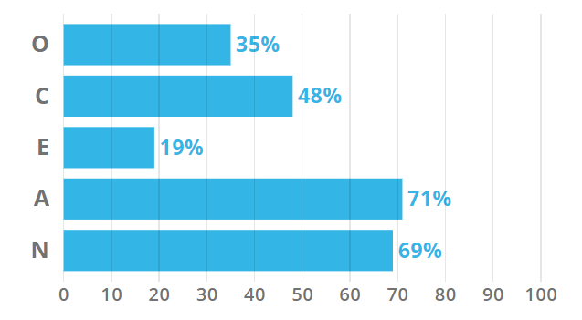

With a job as a systems Analyst, the primary objective is to analyse and document business and system requirements, and work with the stakeholders and the IT department to help meet key performance indicators. While working as a Systems Analyst, you will work with business ideas and become the link between what the business wants to achieve and IT specialists to be the most cost effective and practical solutions to many business problems and goals. This position is appealing to myself as it combines 2 fields of interest of mine, working with businesses as well as working in the field of IT. Also, this appeals to me because you are the person who organises and develops IT solutions in order to meet key objectives of the business, having a high contribution value to the fulfillment of the goals.
Key skills, qualifications and experience that is needed for becoming a Systems Analyst, is to have basic knowledge of user needs and business objectives, being able to analyse and research effectively to create solutions to problems and having strong communications skills in order to implement the plans. Qualifications that may be needed is having a degree completed related to information technology or business.
Currently, skills that I have include the ability to be organised and keep up with demands. I also have worked in a business environment for a few months, knowing how businesses operate which may be relevant in becoming a systems analyst.
In order to obtain the relevant skills, qualifications and experience needed, completing my university degree (Bachelor of Information Technology) should give myself enough skills and qualifications. For example, completing group assignments will give me communication skills in a group environment. Also, completing research assignments will be handy in order obtain skills in researching effectively.
Personal Profile
Myers-Briggs Test Result : Defender (ISTJ)
Introverted – 64%, Observant – 68%, Feeling – 54%, Judging – 74%, Turbulent – 83%
Learning Styles Test: Visual learner
Big 5 Personalty Test

The result of the online Myers-Briggs test indicates that my personality time is a ‘Defender’ type. This indicates that I have good analytical abilities, and good people skills, however, are receptive to change. The results of the learning style test indicate that I am mostly a visual learner, indicating that I learn best from looking at images. The results of the big 5 personality test indicate that I am more cooperative than competitive. The result of these tests indicates the strengths and flaws about my personality, which can be used to find areas to improve as a person throughout my lifetime. Also, with these flaws, I can work on fixing them in a team environment, benefit not just myself but everyone in the group. With the online test results from yourself and others, you can figure out who would be a good match for each other, therefore improving workflow.